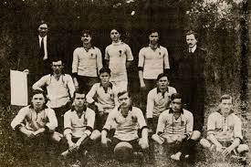
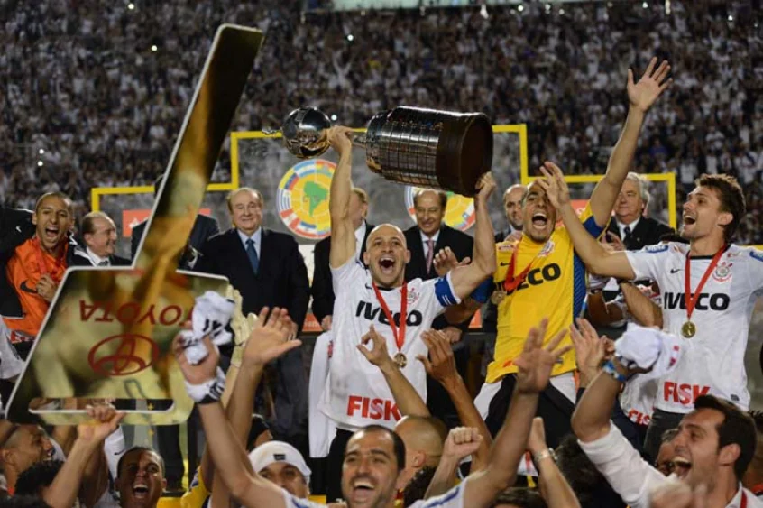
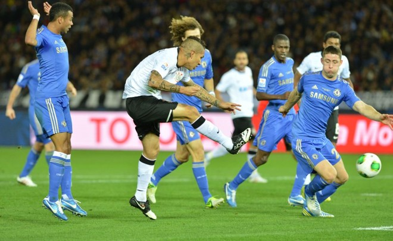

Às 20h30 do dia 1º de setembro, à luz de um lampião, na esquina das ruas José Paulino e
Cônego Martins, no bairro do Bom Retiro, o grupo de operários formado por Anselmo Corrêa,
Antônio Pereira, Carlos Silva, Joaquim Ambrósio e Raphael Perrone fundaram o Sport Club
Corinthians Paulista. Com mais oito rapazes, foi formada a reunião dos primeiros integrantes
e sócio-fundadores do Timão, que teve seu nome inspirado na equipe inglesa
Corinthian-Casuals Football Club, que fazia excursão pelo Brasil. O presidente escolhido por
eles foi o alfaiate Miguel Battaglia, que, já no primeiro momento, afirmou: “O Corinthians
vai ser o time do povo e o povo é quem vai fazer o time”. Um terreno alugado na Rua José
Paulino foi aplainado, virou campo e foi lá que, já no dia 14 de setembro, o primeiro treino
foi realizado diante de uma plateia entusiasmada, que garantiu: “Este veio para ficar!”.
TÍTULOS
Quantos títulos mundiais o Corinthians tem?
O Timão venceu o Mundial de Clubes em 2000 e 2012.
Quantos títulos da Libertadores o Corinthians tem?
O Timão venceu o torneio em 2012.
Quantos títulos brasileiros o Corinthians tem?
São sete: 1990, 1998, 1999, 2005, 2011, 2015 e 2017.
Quantos títulos da Copa do Brasil o Corinthians tem?
Três: 1995, 2002 e 2009. O Timão ainda conquistou a Supercopa do Brasil em 1991.
Quantos títulos paulistas o Corinthians tem?
São 30 (é o maior vencedor): 1914, 1916, 1922, 1923, 1924, 1928, 1929, 1930, 1937, 1938,
1939, 1941, 1951, 1952, 1954, 1977, 1979, 1982, 1983, 1988, 1995, 1997, 1999, 2001, 2003,
2009, 2013, 2017, 2018 e 2019.
PRIMEIRO TÍTULO

Com apenas quatro anos de existência, o time conquistou seu primeiro título, o
Campeonato Paulista de 1914 (organizado pela LPF). O Corinthians sagrou-se campeão de
forma invicta, com 10 vitórias em 10 partidas, 37 gols marcados e 9 gols sofridos. Com
12 gols, Neco foi o artilheiro da competição.
LIBERTADORES 2012

O dia em que, enfim, o Corinthians conquistou a tão sonhada Copa Libertadores da
América. Neste dia, em 2012, o Timão, que era na época o atual campeão brasileiro,
chegou à inédita final do torneio sul-americano. Comandado pelo técnico Tite, o
Alvinegro enfrentou na decisão nada mais nada menos do que o Boca Juniors.
MUNDIAL 2012

Há nove anos, o Corinthians derrotava o Al Ahly, do Egito, pela semifinal do Mundial de Clubes de 2012. O triunfo foi o primeiro passo para uma das mais importantes conquistas da história corintiana. E na final contra o chelsea o resultado foi garantido por um gol marcado pelo atacante Paolo Guerrero, em uma vitória por 1 a 0.